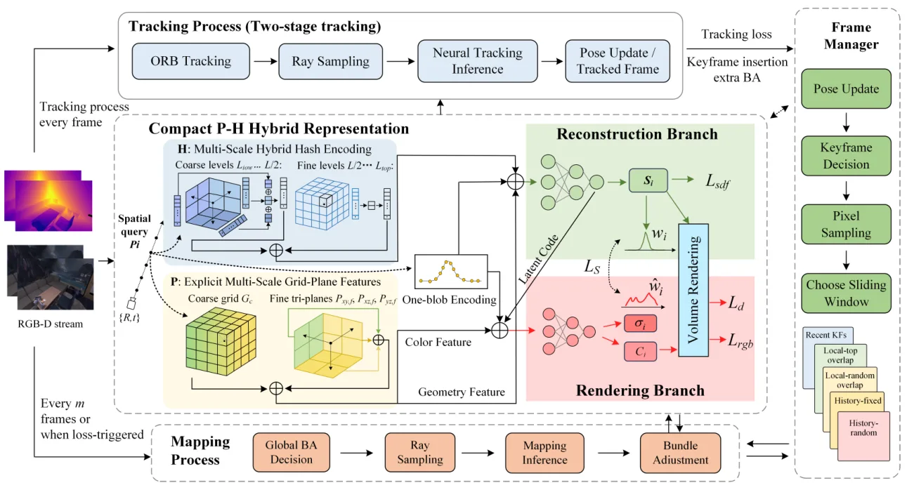

CHOW-SLAM：采用互补重叠窗口优化的紧凑混合表示 RGB-D SLAMCHOW-SLAM: Compact Hybrid Representation with Complementary Overlap Window Optimization for RGB-D SLAM
主题与 RGB-D SLAM 高度直接，兼顾表示压缩、关键帧选择、BA 调度和开源实现；真实在线资源消耗与长序列回环仍待验证。
一句话工作总结
以紧凑 P-H 混合场景表示和覆盖长短时间尺度的互补窗口，在固定在线预算内提升 RGB-D 稠密建图与跟踪。
摘要
CHOW-SLAM 面向在线资源受限的神经稠密 RGB-D SLAM，同时构造紧凑空间约束和持久时间约束。空间侧以跨尺度 plane/grid 组织 P-H 混合表示，并用统一多输出 decoder 对齐 TSDF 与 density 诱导的 ray termination distribution；时间侧在固定预算中保留近期帧、选择高重叠局部帧，并加入时间分散的历史关键帧。系统还使用 loss-aware keyframe insertion、bundle adjustment scheduling、ORB 跟踪和几何位姿初始化。
Simultaneous localization and mapping (SLAM) based on Neural Radiance Fields (NeRF) enables dense, continuous scene reconstruction. However, existing systems operating with limited online resources struggle to simultaneously construct two types of constraints, namely, compact yet discriminative spatial constraints derived from scene representations and persistent temporal constraints derived from historical observations. To address this challenge, we propose CHOW-SLAM, a dense RGB-D SLAM framework that explicitly constructs these complementary spatial and temporal constraints. Spatially, we propose a compact parametric-hash (P-H) hybrid representation that organizes components based on planes and grids across scales in P and H branches. A unified multi-output decoder further aligns the ray termination distributions induced by TSDF and density, preserving geometry and appearance under a compact parameter budget. Temporally, we propose a complementary overlap-window strategy to prevent optimization from being dominated by short-term overlap or weakly related historical observations. Within a fixed budget, the strategy retains recent frames, selects high-overlap local frames, and introduces temporally distributed historical keyframes. Loss-aware keyframe insertion and bundle adjustment scheduling further adapt optimization to tracking quality. In addition, ORB-based tracking and geometric pose estimation are used for pose initialization, followed by neural rendering optimization to improve tracking stability. Extensive evaluations on multiple datasets demonstrate that CHOW-SLAM outperforms state-of-the-art methods in both scene reconstruction quality and camera tracking accuracy. The source code is available at https://github.com/jinjidexiaohuoban/CHOW-SLAM.
中文解读摘录
- 原题：Swimm3R: Splatting with Medium-aware SfM for Underwater 3D Reconstruction
- 作者：Minseong Kweon, Junaed Sattar
- 推荐评分：9.2/10
- 核心方法：把空气中几何先验蒸馏到前馈骨干，并用物理 head 联合回归水下成像参数、相机位姿和恢复点云；随后用带 Beta primitives 与散射感知几何梯度的 Underwater Beta Splatting 表示场景。
- 为何值得看：它不是单纯先增强图像再做 SfM，而是把散射、衰减、位姿和几何放进统一框架。论文报告相对 WaterSplatting 平均 PSNR 提升 1.47 dB，RRA@15/RTA@15 分别提高 2.0/2.4 个百分点；需进一步检查 Barbados 数据集规模、跨水体泛化和绝对尺度。
图表/页面预览

{kind=link}
